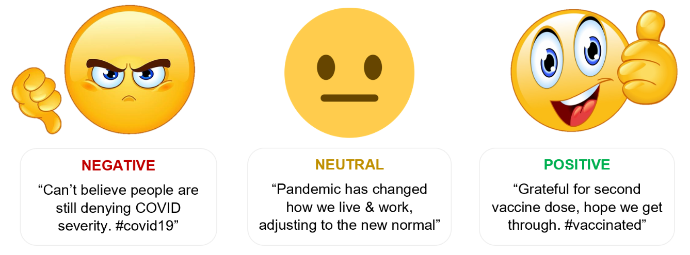

# Install the emoji package before loading
!pip install emojiText Preprocessing for Sentiment Analysis
Programming
A guide to pre-processing text data for sentiment analysis in Python.
Outline
Introduction & Method
Sentiment analysis is a critical component of natural language processing (NLP) that helps decipher the emotional tone behind words. This analysis is particularly valuable not only in social media monitoring and market research but also in public health initiatives. Understanding public sentiment can significantly enhance health communication strategies, patient engagement, and policy formulation. Moreover, in public health crises, sentiment analysis can help track community reactions to health advisories or public sentiment toward vaccination drives, thus informing more targeted health communication and intervention strategies. However, the effectiveness of sentiment analysis in these sensitive areas is heavily reliant on the quality of preprocessing applied to text data. This post details my approach to preprocessing texts to enhance sentiment analysis. Through a series of carefully designed steps, I aim to transform raw text data into a clean, analyzable format, setting the stage for accurate classification.

Here’s a detailed breakdown of the preprocessing techniques I employed to refine the raw tweet data:
URL Removal: I began by stripping URLs from the texts. URLs usually don’t contribute to sentiment and can add irrelevant noise to the text, so removing them helps in focusing on meaningful content.
Tokenization: Next, I tokenized the text by splitting the texts into individual words. This is crucial as it allows us to process the text at the word level, which is essential for the subsequent cleaning and analysis steps.
Removing Stopwords: I then removed stopwords - common words such as “the,” “and,” “is,” etc., which are abundant in English but do not carry significant sentiment. Eliminating these words helps reduce textual noise and focuses the analysis on more impactful words that convey sentiment.
Eliminating Special Characters: I also scrubbed the text of special characters like punctuation marks, symbols and emojis. These characters do not typically contribute to sentiment and can impede the performance of sentiment analysis models.
Lemmatization: Finally, I applied lemmatization to consolidate similar words to their base or dictionary forms. Unlike stemming, which simply chops off the ends of words to reach a common base, lemmatization considers the context and morphological analysis of words to accurately transform them to their lemma. This process reduces the number of unique words the model must handle, enhancing its ability to generalize across different variations of the same word.
Through these text preprocessing steps, I transformed the raw text data into a clean and standardized format. This preparation is vital for conducting accurate sentiment analysis as it helps eliminate noise, reduce the complexity of the data, and focus on the most impactful elements of the text. The preprocessed texts are now ready for further analysis and can be effectively used in sentiment classification models to understand public sentiment.
Python Implementation
Before creating the preprocessing function, it’s essential to set up the environment with the required packages. This includes loading libraries and downloading necessary data for text manipulation.
# Load Required packages
import pandas as pd
pd.set_option('display.max_colwidth', None)
import numpy as np
import nltk, re, emoji, spacy
from nltk.stem import WordNetLemmatizer
from nltk.corpus import stopwords
# Download necessary NLTK resources
nltk.download('stopwords')
nltk.download('punkt')
nltk.download('wordnet')The preprocess_text function below incorporates all the preprocessing steps discussed in the Introduction & Method section. It is structured to be reusable for any text dataset that requires cleaning for sentiment analysis.
# Load the spaCy model
nlp = spacy.load("en_core_web_sm")
def preprocess_text(data):
processed_data = []
# Set of English stopwords
stop = set(stopwords.words('english'))
for sentence in data:
# Remove URLs
text = re.sub(r'https?://\S+|www\.\S+', '', sentence)
# Remove emojis using the emoji library
text = emoji.replace_emoji(text, replace='')
# Create spaCy doc object
doc = nlp(text)
lem_list = []
for token in doc:
if token.is_alpha and token.text.lower() not in stop: # Check if token is alphabetic and not a stopword
if token.pos_ != "PRON": # Exclude all pronouns
lem_list.append(token.lemma_.lower())
# Rejoin words to form the final cleaned text
final_text = ' '.join(lem_list)
processed_data.append(final_text)
return processed_dataTo demonstrate the functionality, the preprocessing function is applied to a sample dataset containing reviews. This will output the cleaned versions of the input reviews, showing how punctuation, common words, and case have been normalized.
# Sample input text
sample_text = ["The pandemic has affected the world.. @100% https://example.com!! :)"]
cleaned_text = preprocess_text(sample_text)
cleaned_text['pandemic affect world']Next, I create a DataFrame with 20 sample reviews, ratings, and IDs, and apply the function to clean the review texts.
# Creating a sample DataFrame with texts
data = {
'Review': [
"Lockdown was necessary for our safety, I fully support it! 😊",
"I understand the need but it was too long. 😕",
"Lockdown completely disrupted my life, it was terrible. 😡",
"It was well-handled and necessary for public health. 🏥",
"Lockdown helped us control the virus spread. 😷",
"It was too restrictive and unnecessary for so long. 😒",
"Not sure if lockdown was the best solution, but we had no choice. 🤷",
"It saved lives, but at a great personal cost to many. 😔",
"The government did what was necessary during the lockdown. 👍",
"Lockdown was too harsh and not managed well. 😠",
"It was a good measure, but I hated being stuck at home. 🏠😖",
"Lockdown was essential but mental health suffered a lot. 🧠💔",
"The benefits outweigh the negatives of the lockdown. ➕➖",
"Poor execution made it harder than it should be. 😞",
"Lockdown was over before it was truly safe to do so. 😨",
"We needed the lockdown to protect vulnerable populations. 🛡️",
"The economic impact of lockdown was devastating. 💸",
"Lockdown showed we can take collective action when needed. 🤝",
"It was necessary, but the government support was insufficient. 💔",
"Lockdown should have been stricter to be more effective. ⚠️"
],
'Sentiment_Rating': [5, 3, 1, 4, 5, 2, 3, 3, 4, 1, 3, 2, 4, 2, 3, 5, 1, 4, 2, 4]
}
# Creating the DataFrame
reviews_df = pd.DataFrame(data)
# Applying the text preprocessing function
reviews_df['Cleaned_Review'] = preprocess_text(reviews_df['Review'].tolist())
reviews_df| Review | Sentiment_Rating | Cleaned_Review | |
|---|---|---|---|
| 0 | Lockdown was necessary for our safety, I fully support it! 😊 | 5 | lockdown necessary safety fully support |
| 1 | I understand the need but it was too long. 😕 | 3 | understand need long |
| 2 | Lockdown completely disrupted my life, it was terrible. 😡 | 1 | lockdown completely disrupt life terrible |
| 3 | It was well-handled and necessary for public health. 🏥 | 4 | well handle necessary public health |
| 4 | Lockdown helped us control the virus spread. 😷 | 5 | lockdown help control virus spread |
| 5 | It was too restrictive and unnecessary for so long. 😒 | 2 | restrictive unnecessary long |
| 6 | Not sure if lockdown was the best solution, but we had no choice. 🤷 | 3 | sure lockdown good solution choice |
| 7 | It saved lives, but at a great personal cost to many. 😔 | 3 | save life great personal cost many |
| 8 | The government did what was necessary during the lockdown. 👍 | 4 | government necessary lockdown |
| 9 | Lockdown was too harsh and not managed well. 😠 | 1 | lockdown harsh manage well |
| 10 | It was a good measure, but I hated being stuck at home. 🏠😖 | 3 | good measure hate stick home |
| 11 | Lockdown was essential but mental health suffered a lot. 🧠💔 | 2 | lockdown essential mental health suffer lot |
| 12 | The benefits outweigh the negatives of the lockdown. ➕➖ | 4 | benefit outweigh negative lockdown |
| 13 | Poor execution made it harder than it should be. 😞 | 2 | poor execution make hard |
| 14 | Lockdown was over before it was truly safe to do so. 😨 | 3 | lockdown truly safe |
| 15 | We needed the lockdown to protect vulnerable populations. 🛡️ | 5 | need lockdown protect vulnerable population |
| 16 | The economic impact of lockdown was devastating. 💸 | 1 | economic impact lockdown devastating |
| 17 | Lockdown showed we can take collective action when needed. 🤝 | 4 | lockdown show take collective action need |
| 18 | It was necessary, but the government support was insufficient. 💔 | 2 | necessary government support insufficient |
| 19 | Lockdown should have been stricter to be more effective. ⚠️ | 4 | lockdown strict effective |